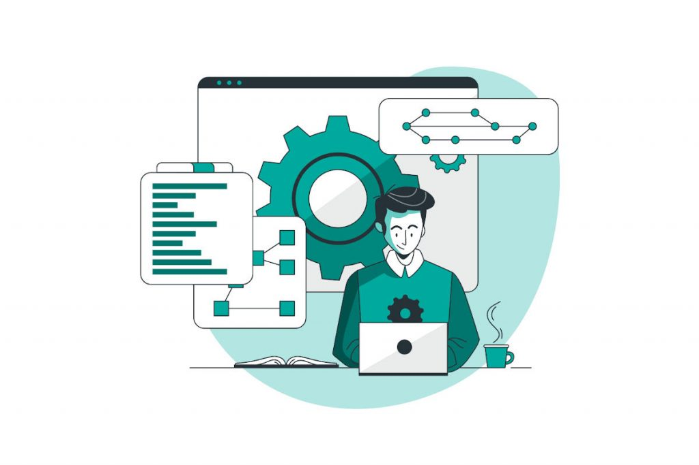

Información Principal
Ramón
Ramón Molina Vázquez
Ramón Molina Vázquez
Presentación
Hola, soy Ramón, un chico el cual esta comenzando en el desarrollo Mobile con IONIC,
actualmente estoy en esta Beca la cual me brindará los conocimientos necesarios para introducirme al mundo Mobile.
Intereses Personales
Pasar tiempo con mi novia
Jugar Videjuegos

Programar
Ver series
Ver directos de Videojuegos